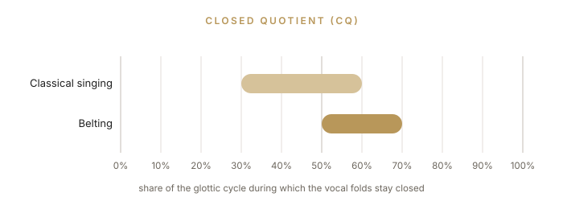
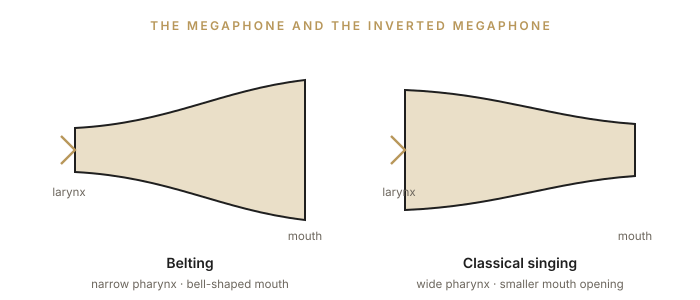

Part IV
Vocal modes, sound colors, effects, and belting: the technical repertoire of contemporary singing.
The voice can be organized into four vocal modes. Together they form a scale of “metal,” running from the least metallic timbre of the voice to the most metallic. Think of this scale as the singer’s “effects pedalboard”: you choose your sound profile according to technical need, personal preference, or the style you are singing. The four vocal modes are Neutral, Curbing, Overdrive, and Edge.
Each mode has its own distinct characteristics. Understanding the modes, their qualities, their advantages and their limits, and learning to apply them, is essential for any singer who wants to use their full vocal potential safely and well, to bring color to their singing, and above all to avoid technical problems.
Where the term comes from
The organization of the voice into four modes (Neutral, Curbing, Overdrive, and Edge), along with the concepts of “sound colors” and “effects,” was systematized by the Danish singer and researcher Cathrine Sadolin in her Complete Vocal Technique method (SADOLIN, 2012). The mode names are given in English, as in the original method.
| Mode | Metal | Timbre | Where it works best |
|---|---|---|---|
| Neutral | Non-metallic | Soft, rounded, velvety | All ranges; in the high range, it takes on a classical, operatic placement |
| Curbing | Half-metallic | Plaintive, held back | Excellent in the middle range; sounds “flattened” up high |
| Overdrive | Metallic | Thick, dense, powerful | Low and upper-middle ranges; avoid in the middle range |
| Edge | Very metallic | Pointed, bright, sharp | High range; not recommended in the middle and low ranges |
Listen
Examples of Neutral: Emily Kokal and Ariana Grande.
Listen
Examples of Curbing: Paula Fernandes and Beyoncé.
Listen
Examples of Overdrive: Taya Smith and Beyoncé.
Listen
Examples of Edge: Taylor Swift and Carrie Underwood.
Caution
The more metallic modes (Overdrive and Edge) require command of support, counter-support, and twang. Practice them under guidance, only briefly at first, and stop at the first sign of discomfort. The fundamentals covered in Chapters 2, 9, and 13 are prerequisites.
Every mode can be altered by shaping the timbre to produce lighter or darker colors, though some modes allow more alteration than others. Colors change through adjustments to the vocal tract (the space just above the vocal folds, extending to the lips and including the nasal passage) and through control of support and counter-support, since the way the chest and abdominal muscles are engaged influences the configuration of the laryngeal muscles (SADOLIN, 2012).
Every singer has a different body, so every person is unique and will arrive at unique sound colors and effects. You can only explore these possibilities for changing the color of your voice once you learn to control each of these physical mechanisms, so that you can engage them while you sing and produce different colors.
Effects are noises and small ornaments that can be added to the voice or the phrasing to heighten a singer’s expression or style. Because every voice is unique, each effect must be built specifically for each singer, taking into account their anatomy, physiology, energy level, and temperament.
Before you begin
Before working with effects, you need a firm grasp of the fundamentals of healthy voice use (Parts I and II), as well as a thorough knowledge and command of the modes and their colors.
Belting belongs to what is known as Contemporary Commercial Music (CCM). The term covers the American techniques of belting and speech-level singing and applies to the techniques associated with American commercial music, which in Brazil can be heard in gospel music and other segments of pop, as well as in the technique used in Brazilian productions of Broadway musicals. This approach is recent in Brazil, but it has already earned a prominent place in voice teaching because of its strong commercial appeal.
Understanding this style matters because vocal models imported from the United States are often used without rigor or proper training in musicals, stage shows, and Brazilian vocal music, leading to inconsistent timbre, health problems, and a loss of vocal quality.
To understand belting technique, we must first define registers, an area prone to misunderstanding. In the classic definition by Manuel Garcia (1847), a register is “a series of consecutive and homogeneous tones, from low to high, produced by the same mechanical principle, and whose nature differs essentially from another series of tones, equally consecutive and homogeneous, produced by another mechanical principle.”
The term belting comes from the verb to belt out, meaning to sing in a forced, shouted way. The term is still highly controversial. The voice scientist Ingo Titze speaks of a “production style” rather than a technique. LoVetri (2003, p. 211) states that it is “merely a label given to a certain aspect of chest-register function.” Today, belting is recognized as a style or technique of singing in mixed voice (mix) with a predominance of the chest sub-register, usually in the upper part of the range. Its timbre is described as having a great deal of brilliance (ring), a metallic quality (brassiness), twanginess (the bright, edgy timbre heard in country singers), and loud dynamics.
Belting emerged in the 1930s with singers such as Ethel Merman, Celeste Holm, and Judy Garland, as an alternative to legit, the classical style of Broadway singing: less projected and better suited to the microphone, but with a timbre and production very close to those of operatic singing.
In the musical Oklahoma!, belting became firmly established as the sound of comic characters and comedy numbers. It has been a source of controversy among voice teachers ever since. Cornelius Reid, one of the leading voice pedagogues of the 1960s, criticized it as “the practice of pop singers singing to the limits of the chest register.”
The typical belt of the 1940s can be heard in the voice of Judy Garland: a heavy chest voice that did not go much above C4 and sometimes cracked at A3. It was marked by constant effort, strain, and, often, early retirement.
Today’s belt shows greater freedom in sound production, less effort, little vibrato, and a bright (forward) sound, without the earlier sense of precariousness or fragility. The timbre is defined predominantly by the action of the thyroarytenoid (TA) muscle, in a TA-dominant mixed voice (chest mix) that can reach G4 in female high belters.
The relationship between singing and speech is intrinsic to Broadway music. Teachers and directors constantly remind performers that this is musical theater: the word, the text, comes first. The voice serves the text. Belting grew out of the need to sing to large audiences without a microphone, with articulation close to that of speech, in a range close to that of the call: the loud, almost shouted call, the “hey!”
That is why the music is written in the speaking range (with the exception of legit, which follows the rules of classical singing more closely). When the melody moves somewhat away from the speaking range, belting becomes even more important, because it preserves the more natural articulation and delivery of speech. It is always essential that the text be understood the first time (SCHUTTE; MILLER, 1993, p. 142), and the resulting sound must seem natural; a covered or dark voice is ruled out. Belting is the equivalent of “impassioned speech” (SPIVEY, 2008).
Belting has its own characteristics both at the source (phonation) and in the filter (the vocal tract). At the source, the closed quotient of the vocal folds (CQ) in classical singing generally falls between 30% and 60% (in tenors). In belting, it averages between 50% and 70% for all voice types (WELLS, 2006, p. 69), which reflects greater tension in phonation, higher subglottal pressure, higher sound pressure levels, more tension in the extrinsic muscles, and greater adduction of the vocal folds.

Even so, for all the importance of the phonatory adjustment, the main component of belting is the adjustment of the vocal tract (LOVETRI, 2003), achieved intuitively through a process called formant tuning. Belting is also characterized by a slightly raised larynx, a narrower pharynx (POPEIL, 2012), twang (a narrowed aryepiglottic sphincter), and a shortened vocal tract, all of which produce a brighter sound.
The mouth is usually bell-shaped, like a megaphone, with the jaw dropped wide open, unlike classical singing, which is characterized by an inverted megaphone (TITZE; WORLEY; STORY, 2011). Between C4 and E4, classical sopranos reduce their mouth opening; belters do the opposite. Only after the passaggio, once in head voice, do classical singers open the mouth wider.

Watch
Watch Idina Menzel perform in belt: you can clearly see the bell-shaped mouth and the wide-open jaw.
For Brazilian singers, it may be easier to learn belting with a foundation in classical singing, since Brazilian urban popular singing is very different from belting. Singing in belt demands great physical and muscular stamina, excellent breath control, and awareness of vocal-tract and phonatory adjustments.
There are many substyles of belting, and different teachers follow different classifications. The researcher Johan Sundberg proposes the following: heavy, brassy, ringy, nasal, and speechlike. Other substyles, tied to particular musicals or repertoires, include Old Disney, New Disney, rock belt (as in the musical Rent), soul belt, pop belt, and many more. These substyles still depend heavily on individual teachers, and there is a long way to go before a definitive classification emerges.
From the 2000s onward, another quintessentially American cultural form, the Broadway musical, achieved great success in Brazil as imported shows translated into Portuguese began to be produced. Like gospel music, these shows prize vocal virtuosity and leave little room for colloquial speech. Many of them, such as Les Misérables (2001) and Beauty and the Beast (2002), are American franchises whose contracts require close fidelity to the originals. On the one hand, they pushed productions to a level of professionalism previously unknown in Brazil; on the other, they imposed a “package” with “all the choreography, arrangements, sets, costumes, and vocal parts. (...) In these shows, nothing or almost nothing seems to be created. Much less improvised” (VENEZIANO, 2008, p. 2-3).
The demand for actor-singers created by these shows spurred interest in studying belting. Many Brazilian teachers specialized in this kind of singing; some imported the procedures of American schools wholesale, even becoming certified to teach commercially franchised methods, while others adapted this knowledge and developed methods of their own (MARIZ, 2013). Because the articulatory and resonance patterns of belting lead to a delivery that tends toward the sound of American English even when sung in Portuguese, the technique needs to be adapted for use in Brazil, and often it is not (ELME; FERNANDES, 2014).
Television also shows a trend toward standardizing the vocal performance of Brazilian popular singers. The success of American talent shows such as American Idol and The Voice carried over to Brazil through the import of these franchises, renamed Ídolos and The Voice Brasil, which reproduce not only the format but also a preference for a standardized aesthetic based on American pop singing, especially the gospel-influenced style in which melismas stand out (ELME; FERNANDES, 2014).
The technique of MPB (Brazilian popular music) has nothing to do with belting. A song meant to be sung softly, as if into the listener’s ear, as in bossa nova, with the microphone as close as possible, has none of the breath or timbre characteristics associated with opera or musical theater. Like any vocal technique, belting must be adapted to the characteristics of the language, which takes time and study, and when it is used in Brazilian song, it needs to be reassessed. At the same time, there is an urgent need for initiatives that help value the cultural legacy left by Brazil’s songwriters and popular singers and bring it back into everyday Brazilian life.